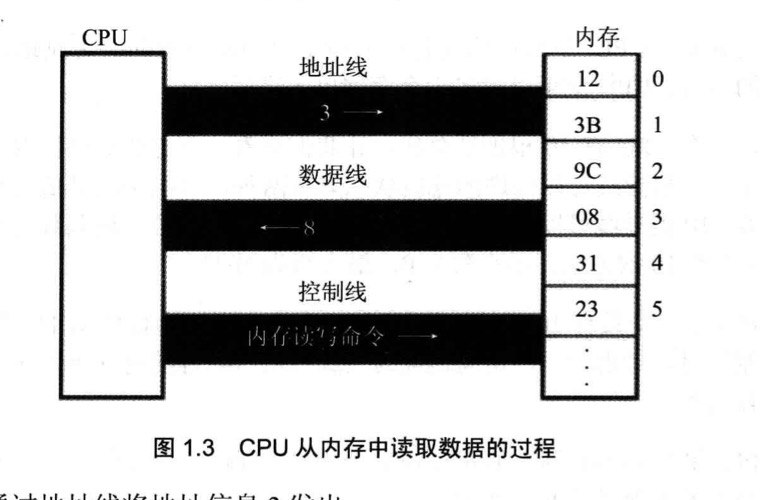
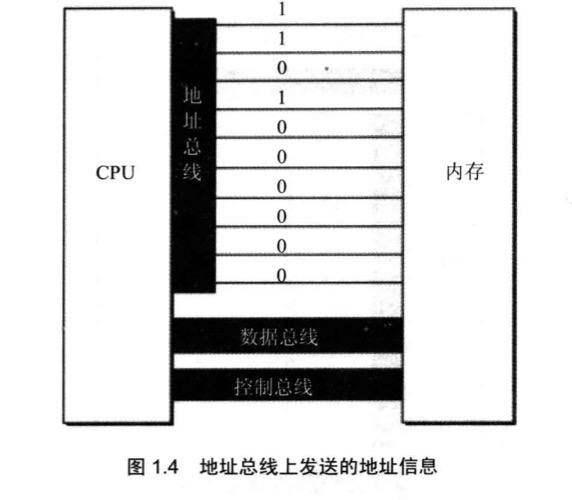
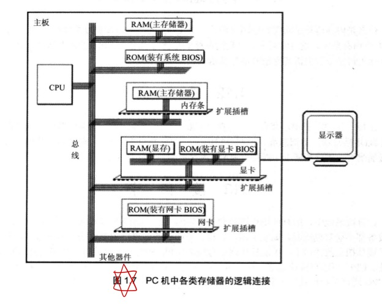
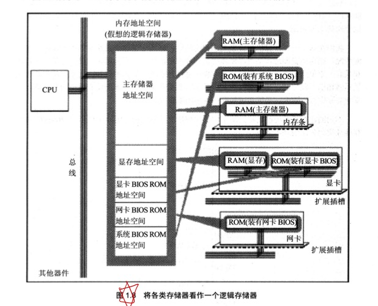
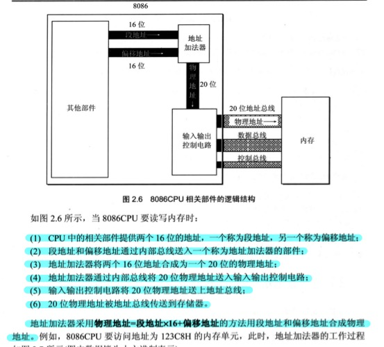
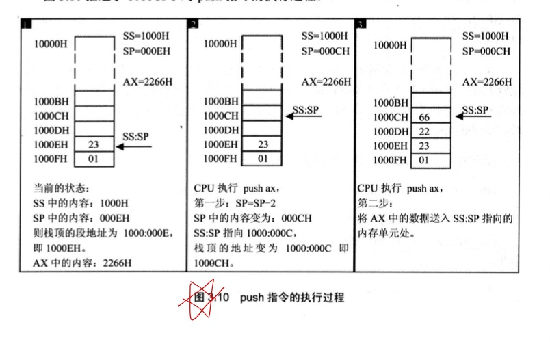
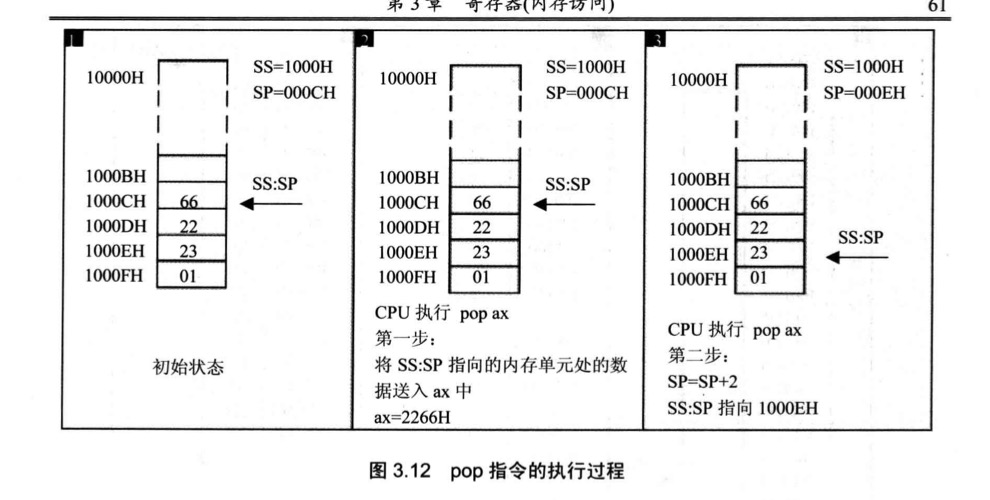

汇编语言学习
1. 基础知识
1. 汇编语言的组成
（1）汇编指令：机器码的助记符，有对应的机器码
（2）伪指令：没有对应的机器码，有编译器执行，计算机不执行
（3）其他符号：如+，-，*，/，有编译器识别，没有对应的机器码
2. CPU对存储器的读写
CPU要与外部组件进行3类信息的交互实现数据的读写。
（1）存储单元的地址（地址信息）
（2）器件的选择，读或写的命令（控制信息）
（3）读或写的数据（数据信息）
3. 总线的分类（逻辑上）

（1）地址总线
地址总线的数量决定CPU对存储单元寻址的范围，一个CPU有N跟地址线，即CPU的地址总线的宽度为N，能够寻找2的N次方个内存单元。

（2）数据总线
数据总线的宽度决定了CPU和外界的数据传输速度。根数决定一次传输的位数。
（3）控制总线
控制总线的宽度决定CPU对外部器件的控制能力。

4. 内存地址空间
（1）接口卡
CPU通过总线向接口卡发送命令，接口卡根据CPU的命令控制外设进行工作。
（2）存储器芯片
读写分为两类：随机存储器(RAM)和只读存储器(ROM)。随机存储器可读可写，必须带电存储，断电内容丢失。只读存储器只读不能写，关机后内容不会丢失。
（3）内存地址空间
CPU将系统中各类存储器看做一个逻辑存储器（抽象性，虚拟性）

2. 寄存器
一个典型的CPU由运算器、控制器、寄存器等器件构成，这些器件考内部总线连接。
运算器进行信息处理，控制器控制各种器件进行工作，寄存器进行信息存储，内部总线连接各种器件，使进行数据的传送。
8086CPU有14个寄存器，分别为AX，BX，CX，DX，SI，DI，SP，BP，IP，CS，SS，DS，ES，PSW。
1. 通用寄存器
8086CPU的所有寄存器都是16位，可以存放两个字节。
AX，BX，CX，DX通常用来存放一般性的数据，称为通用寄存器。
通用寄存器都可以分成两个独立的8位寄存器使用。
2. 字在寄存器中的存储
1. 8086CPU可以一次性处理两种尺寸的数据：
字节：即为byte，一个字节由8个bit组成，可以寄存在8位寄存器中。
字：即为word，一个字由两个字节组成，分别为高位字节和低位字节。
- 8086CPU是16位机，能够一次性处理、传输、暂时存储的信息的最大宽度是16位。
3. 8086CPU给出处理地址的方法

4. 段
- 内存没有分段，段的划分来自于CPU。
- 8086寄存器的段的起始地址一定是16的倍数，偏移地址为16位，16位地址的寻址空间为64KB，所以一个段的长度最大为64KB。
- 段寄存器：CS，DS，SS，ES。
5. CS和IP
指示CPU当前读取指令的地址，CS：代码段寄存器，IP：指令指针寄存器。读取方式：[CS]*16+[IP]
8086CPU的工作过程：
（1）从CS:IP指向的内存单元读取指令，读取的指令进入指令缓冲区。
（2）IP=IP+所读取指令的长度，从而读取下一条指令。
（3）执行指令，转到步（1），重复过程。
jmp指令：修改cs、ip。
jmp 段地址:偏移地址
jmp 某一合法寄存器：用寄存器的值修改IP
3. 寄存器（内存访问）
1. DS和[address]
8086CPU有一个DS寄存器，通常用来存放要访问数据的段地址。
8086CPU不支持将数据直接送入段寄存器，需要使用寄存器进行中转。
2. 栈
（1）段寄存器SS和寄存器SP，栈顶的段地址存放SS，偏移地址存放在SP中。
（2）SS：SP指向栈顶元素。（栈顶元素处于高位）


实验1 查看CPU和内存，用机器指令和汇编指令编程
Debug功能
（1）用R命令查看、改变CPU寄存器的内存。
查看：R
修改：R 寄存器
（2）用D命令查看内存中的内容
默认查看：D
指定查看：D 段地址：偏移地址
D 段地址：偏移地址 结尾偏移地址
（3）用E命令改写内存中的内容
E 起始地址 数据 数据…
可以用E命令向内存中写入字符，机器码。
（4）用U命令查看内存中机器码的含义，T命令执行机器码。
（5）用A命令以汇编指令的形式在内存中写入机器指令。